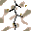

Incidents
Every shift brings 2 incidents plus one for every 3 people on it. The station announces some on the radio; the end-of-shift summary shows how long each took to fix.
There is no fuel on the station: its power is solar only. What goes wrong is wear, in the hull and in the power plant.
Hull wear
Dust and heat eat at the outer walls all shift. A wall goes worn (a stain), then cracked (a small leak), and a crack nobody mends opens to space.
 Worn
Worn
Cracked Hole
Hole
Plating erosion
Dust and heat eat at one outer wall and the walls beside it: the plating there goes thin (a stain on the wall), then cracks and leaks a little air, and with no one to mend it opens to space, the room losing its air within seconds.
Fix: Look at the outer walls (or carry a thickness gauge). An engineer reinforces a worn wall with the welder alone, and patches a cracked one with a hull plate and the welder. A hole is patched the same way; an air tank in the EVA suit's storage keeps them breathing inside. If the doors are sealed, a crowbar forces one open (Logistics does it fastest). Once the hole is patched the room's vents refill it.
Worn plating gave way
A cracked outer wall that nobody mended opened to space: the room loses its air within seconds and the pressure lock seals its doors.
Fix: A hull plate with a welder in the other hand patches the hole; an EVA suit's air tank keeps the repairer breathing.


Power fault
Power fault
A cable near a room's power panel fails: the room is cut off and goes dark, and its doors, vents and consoles stop working.
Fix: Find the gap in the cable line near the room's panel (a fault is always where cable lies open: in a maintenance tunnel or under a lifted floor tile) and lay cable over it with a cable coil.
Radiation belt
The station crosses a radiation belt once, and in half the shifts twice. The radio warns 40 seconds ahead: get into the maintenance tunnels, whose doors open to everyone and blink orange. The belt lasts 60 to 90 seconds. Whoever is not sheltered loses 3 health every 3.5 s; the tunnels and the EVA pods are safe, the rooms, the hall and the truss are not. A few hull walls wear while it lasts. After the belt the radio says so, and the doors go back to their access 120 seconds later.

Developing faults
Parts of the solar plant wear out slowly: a fault develops over minutes (a part runs hotter, gives less, and only then fails), and nothing is announced on the radio. The consoles in Solar Control show it as it grows. Nothing starts in the first 150 seconds or the last 4 minutes of a shift, and no more than 2 parts are in trouble at once. A 25-minute shift sees one to three. See the Power part of How to play for the repairs.
- A controller's vents are clogging. (common)
- A controller's terminals are wearing.
- A battery cell is starting to fail. (common)
- An inverter fan is wearing out.
- An inverter module's capacitors are ageing.
- The transformer's winding is ageing.
- A load on a feeder is starting to leak. (common)
- A solar panel is starting to crack. (common)
- An array's bolts are working loose.
- An array's tracking joint is wearing.